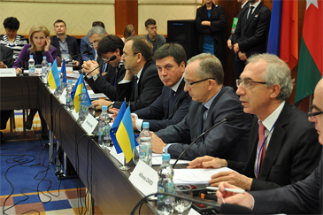

ФОНД СПРИЯННЯ
МІСЦЕВОМУ
САМОВРЯДУВАННЮ
В УКРАЇНІ

Питання участі органів місцевого самоврядування України в
міжнародному співробітництві
Здобувши наприкінці ХХ сторіччя незалежність, Україна, як і інші пострадянські країни, опинилася у «перехідному періоді», де одночасно відбувалися глибинні трансформаційні перетворення: від колишньої республіки у складі СРСР до незалежної держави; від адміністративно-командної системи державного управління до демократичної; від системи державного планування до ринкової економіки. Усі ці виклики для України й сьогодні залишаються актуальними, адже вирішити їх самостійно та ще й у такий короткий термін є дуже складним завданням.

За таких умов допомога більш розвинутих в економічному та соціальному плані країн набуває для України великого значення, не тільки відкриваючи можливості отримати додаткові ресурси для власного розвитку, а й наближуючи нашу державу до світових інтеграційних процесів, зокрема європейських. Сьогодні в нашій державі активно діють представництва міжнародних організацій, що дозволяє вітчизняним ОМС брати участь не тільки в європейських програмах та проектах, а також співпрацювати з донорськими установами США, Канади, Швейцарії, Японії, ООН та ін. Щорічно на ці програми виділяються мільйони доларів США, які слід використовувати для впровадження реформ у політичному та суспільному житті; адаптацію вітчизняного законодавства до міжнародних норм, зокрема європейських; забезпечення сталого розвитку територій і окремих населених пунктів; культурного, спортивного, освітнього й наукового обмінів; вирішення питань з екології та енергозбереження.
В Україні розташовані представництва багатьох міжнародних організацій, робота яких у тому числі стосується і діяльності місцевого самоврядування. Це Агентство Канади з міжнародного розвитку (CIDA); Агентство Швеції з міжнародного розвитку (SIDA); Агентство США з міжнародного розвитку (USAID); Британська рада (BritishCouncil); ЄБРР; Міжнародний фонд «Відродження»; Програма МАТРА МЗС Королівства Нідерландів; ПРООН та інші. Окрім цього велика кількість програм в Україні, спрямованих на розвиток громадянського суспільства і місцевої влади, підтримується посольствами іноземних держав.
У світі існує багато різноманітних організаційних форм місцевого самоврядування: земства, місцеві ради народних депутатів, муніципальні (комунальні) органи – магістрати, ландрати, ратуші та ін. Українська організаційна форма органів місцевого самоврядування складається із представницьких органів (Верховної Ради Автономної Республіки Крим, обласних, районних, міських, районних у містах, сільських та селищних рад), їх виконавчих органів та структурних підрозділів, що є підконтрольними й підзвітними відповідній раді, а з питань здійснення делегованих ним повноважень органів виконавчої влади – також підконтрольним відповідній місцевій державній адміністрації.